<!-- 1 · TITLE --> <!-- .slide: class="title center" --> # We Have Already Had Our Singularity ## Digital Ethics, Deep History, and the Case for Human Judgment <span class="lead">A talk drawn from *History of Computing and Its Cultures: From Calculating to Convergence* (in press for 2026–2027) by David B. Dennis and George K. Thiruvathukal (speaker)</span> <p class="authors">George K. Thiruvathukal</p> <p class="affil">Professor and Chairperson, Computer Science, Loyola University Chicago</p> <p class="affil">Visiting Computer Scientist, Argonne National Laboratory</p> Note: Cold open framing: every generation that automated calculation, communication, or judgment has called it unprecedented. This talk is a history of computing's repeated disruptions of culture — CHOC runs from the Ishango Bone to 2020 and never once discusses AI as such. AI comes up only near the end, as one instance in a much longer pattern, not as the subject. --- <!-- 2 · THESIS --> ## The Core Thesis - The opening claim: "Computing came from culture, and then culture increasingly was shaped by computing." - A reversal: computation began as a *cultural artifact* — tallies, abaci — before it became a *world-making environment*. - Digital ethics is not a patch for biased models. It is a question about what computation has always done to culture. <p class="note-inline">If that reversal is right, no computing technology's ethical questions arrive from nowhere. They are old questions wearing a new interface — and this talk is a history of the interfaces, not a talk about any one of them.</p> <p class="chapter-tag">CHOC — "The Core Thesis"</p> Note: Land the thesis sentence early and let it do work for the rest of the talk. Everything that follows is evidence for this reversal. --- <!-- 3 · THEN/NOW BOOKEND --> ## Two Thresholds, Both Missed at the Time <div class="cols"> <div> <figure> <p>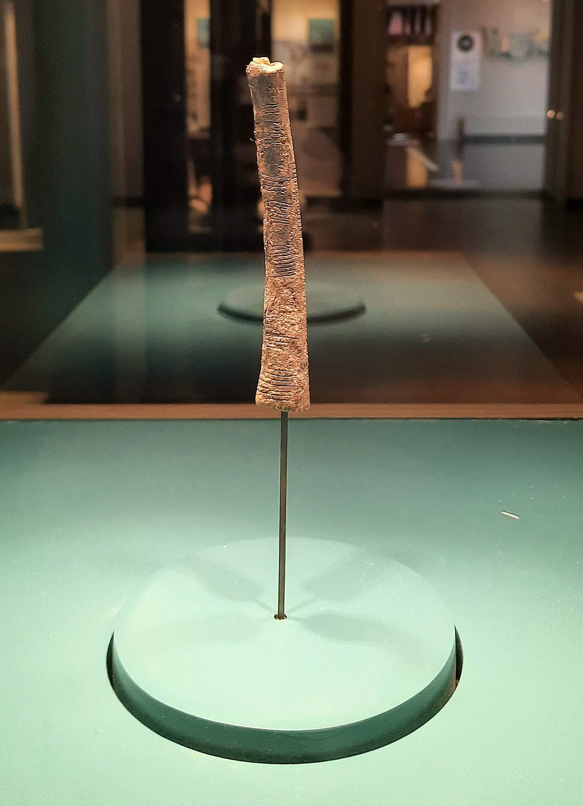</p> <figcaption>Ishango Bone. JhowieNitnek, Wikimedia Commons, CC BY-SA 4.0.</figcaption> </figure> <p class="small">c. 20,000 BCE — notches that made "one" <em>separable from any particular object</em>: the first abstraction underlying computation.</p> </div> <div> <figure> <p>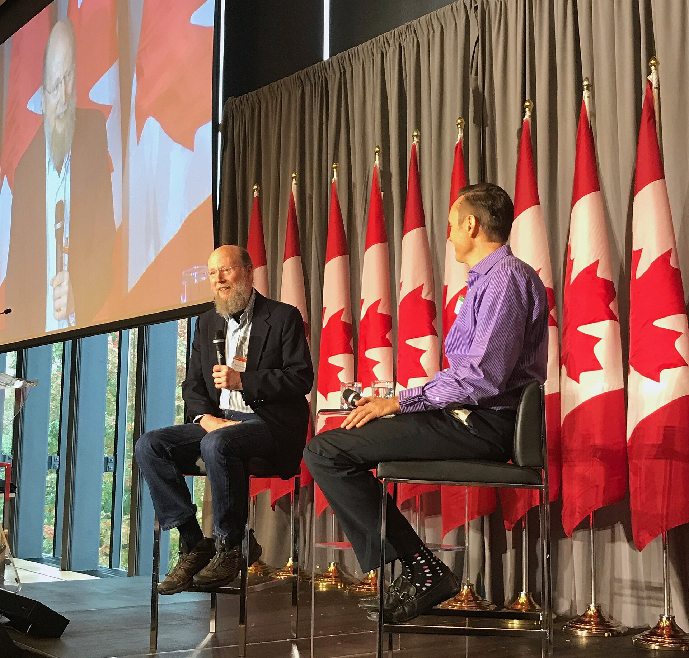</p> <figcaption>AlphaGo / reinforcement learning. Wikimedia Commons, public domain.</figcaption> </figure> <p class="small">2010s — deep learning, transformers, BERT, GPT-2: "submerged infrastructure" that "few... imagined... could become the basis for general-purpose conversational agents."</p> </div> </div> <p class="note-inline">Same pattern, both times: the abstraction advances quietly, and only in hindsight does it look like a threshold. That is the case against Kurzweil's speculative singularity — and for the one CHOC says we already lived, in 2020.</p> <p class="chapter-tag">CHOC — "Paleolithic Numbers and Calculating" · "Data, AI, and the Edge of Automation"</p> Note: The connective tissue, stated plainly for the audience: the Ishango Bone passage argues that treating "one" as an abstract, portable unit was a "pivotal moment in the history of both numerical thought and computation" — nobody notching that bone knew they were inventing computation. The "Data, AI, and the Edge of Automation" passage says almost the same thing about 2012–2019 deep learning: "even the developers training ever-larger models did not anticipate how quickly scaling them up would alter the cultural landscape." Twenty thousand years apart, CHOC tells the same story about how foundational moments get recognized — late, and only from the other side. That's the setup for the Kurzweil contrast on the next slide: the technological singularity is a headline; the cultural one is what actually happened, twice, quietly. --- <!-- 4 · FAUSTIAN-TURING PLANT --> ## A Hybrid Figure, Centuries in the Making <div class="cols"> <div> - The **Faustian Type**: since Babbage's engines, "restless for novelty and progress" — the drive to build and extend human reach. - The **Turing Type**: since Hollerith's punched cards and Turing's abstract computer, learned to "think with, design, and command" those machines. - CHOC: the two coexisted through most of the twentieth century — "explorers and experts... publics and professionals" — and merged into "everyday fact" only in the 2010s. </div> <div> <blockquote>"We are both monstrous and marvelous, born of ambition and algorithm, living within a culture that is no longer separable from its machines."</blockquote> <p class="quote-src">— <em>History of Computing and Its Cultures</em></p> </div> </div> <p class="chapter-tag">CHOC — "Conclusion: The Cultural-Computing Singularity"</p> Note: Plant this now, resolve it at the close (slide 28 repeats the "monstrous and marvelous" refrain from the same closing passage). CHOC traces a restless "Faustian" type since Babbage — ambition, appetite, the drive to build — merging with a "Turing" type since Hollerith and Turing — learning to think *with* and command machines. The two coexisted through most of the twentieth century; CHOC argues the merger became everyday fact only in the 2010s. CHOC invokes Frankenstein deliberately: not a monster story, a responsibility story. --- <!-- 5 · PART 2 DIVIDER --> <!-- .slide: class="center" --> ## Six Lenses, One Continuous Argument <span class="lead">Automation · Agency · Accountability · Access · Labor · Environmental Cost</span> Note: Transition. We now walk CHOC in chronological order — one continuous argument — pausing at each chapter for the example that speaks most directly to one of these six lenses. --- <!-- 6 · CH2 LEIBNIZ --> ## Automating the Drudgery <div class="cols"> <div> - Leibniz on hand calculation: "unworthy of excellent men to lose hours like slaves." - The oldest automation pitch on record: free minds for *higher* work. - Three and a half centuries later, the pitch is unchanged — only the machine is. <p class="chapter-tag">CHOC — "Paleolithic to Scientific Revolution"</p> </div> <div> <figure> <p>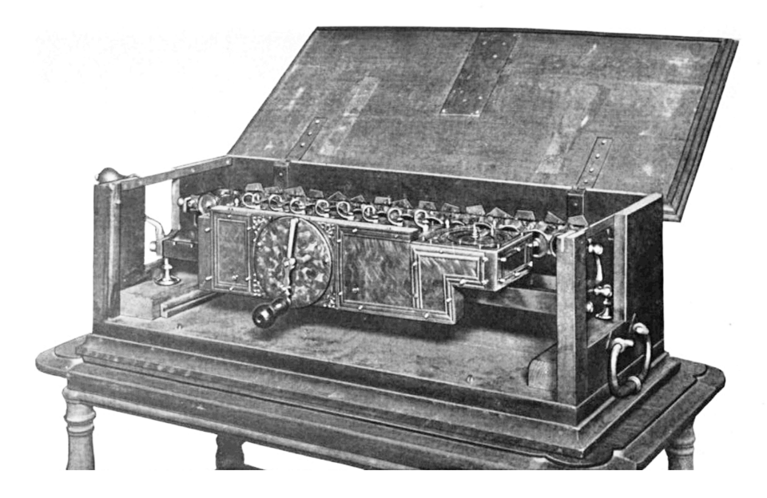</p> <figcaption>Leibniz Stepped Reckoner. J. A. V. Turck, Wikimedia Commons, CC0.</figcaption> </figure> </div> </div> Note: Leibniz and his contemporaries described the "joy" and "relief" of escaping the need to "tire their minds" in calculation. This liberation rhetoric is 350 years old and unchanged in shape. --- <!-- 7 · CH2 ACCESS --> ## Who Was Allowed to Count <div class="cols"> <div> - Literacy and calculation were restricted to scribal elites for millennia. - Aristotle: mathematics arose where "the priestly class was allowed leisure." - Access to computation has always tracked access to privilege. <p class="chapter-tag">CHOC — "Paleolithic to Scientific Revolution"</p> </div> <div> <figure> <p>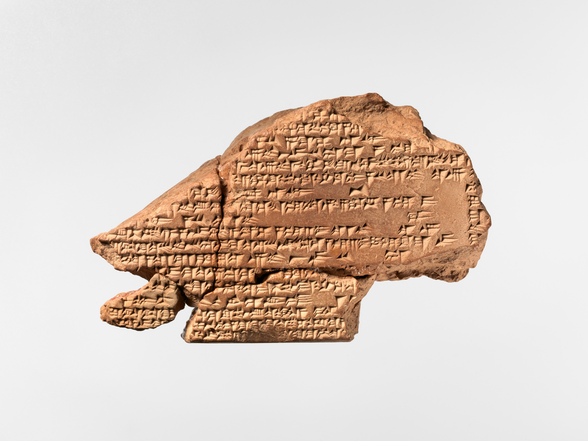</p> <figcaption>Cuneiform tablet, commentary on Enuma Anu Enlil. Wikimedia Commons, CC0.</figcaption> </figure> </div> </div> Note: Set up the access throughline early: it recurs at every technological threshold in CHOC, right up through the 2010s "global divergence" material near the end. --- <!-- 8 · CH3 BABBAGE --> ## The Tables Crisis <div class="cols"> <div> - Human "computers" produced error-prone astronomical/navigational tables. - Herschel: "an undetected error... is like a sunken rock at sea." - Babbage's Difference Engine mechanizes an *existing* labor pipeline (de Prony's ~100 human computers) — automation formalizes, it doesn't invent. <p class="chapter-tag">CHOC — "Babbage, Lovelace, and the Analytical Engine"</p> </div> <div> <figure> <p>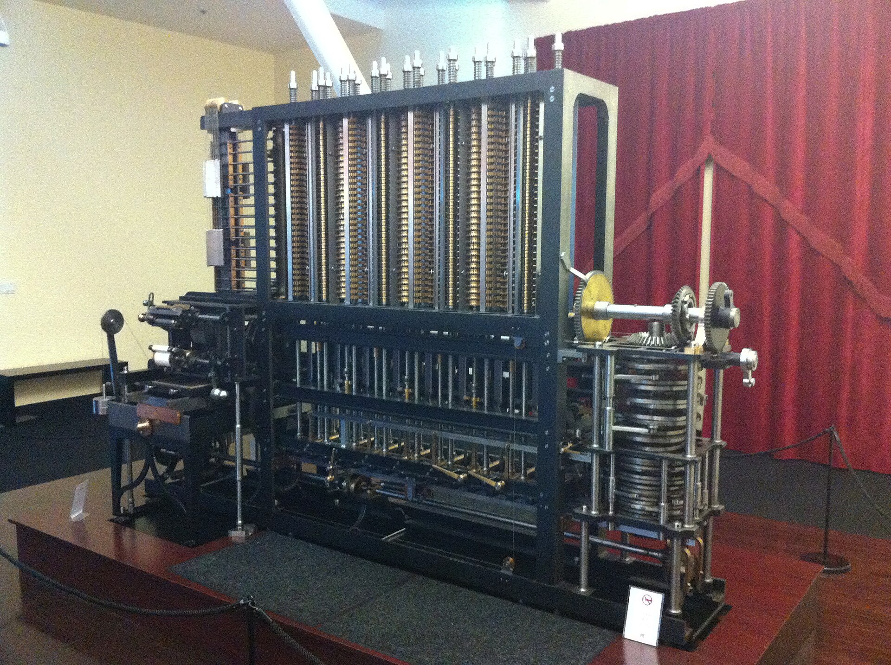</p> <figcaption>Charles Babbage's Difference Engine No. 2. Wikimedia Commons, public domain.</figcaption> </figure> </div> </div> Note: Automation and accountability in one example: errors had real stakes (shipwrecks), and the machine that fixed them mechanized a division of labor that already existed, run by de Prony on Adam Smith's model. --- <!-- 9 · CH3 LOVELACE --> ## The Counterpoint: Augmentation, Not Replacement <div class="cols"> <div> CHOC's account of Lovelace's own speculation: <blockquote>"She speculated that, given the right instructions, the Analytical Engine might compose music or create art."</blockquote> <p class="quote-src">— <em>History of Computing and Its Cultures</em>, on Ada Lovelace</p> - CHOC calls this "a vision of computing that anticipates the idea of computers as creative instruments, not just mathematical engines." - Written before the Engine was ever built — the earliest case for augmentation over replacement. <p class="chapter-tag">CHOC — "Babbage, Lovelace, and the Analytical Engine"</p> </div> <div> <figure> <p>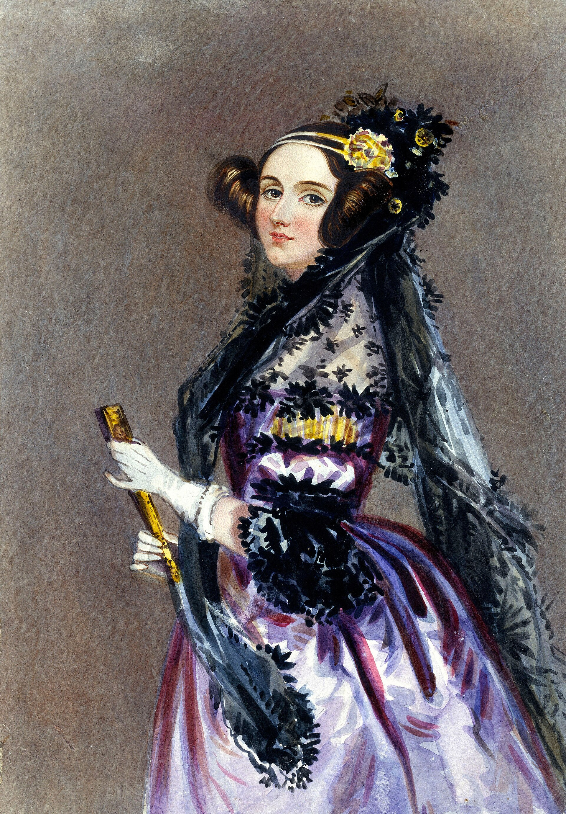</p> <figcaption>Portrait of Ada Lovelace, attr. Alfred Edward Chalon, ca. 1840. Wikimedia Commons, public domain.</figcaption> </figure> </div> </div> Note: Lovelace is the pivot from "automation as threat" to "automation as instrument" — this is the agency/flourishing lens named explicitly in the abstract. --- <!-- 10 · CH4 HOLLERITH --> ## Automation Answers an Overload Crisis <div class="cols"> <div> - The 1880 U.S. census took nearly a decade to tabulate by hand. - Hollerith's punched cards: *data*, not instructions — a distinction computing would keep rediscovering for the next 140 years. - "Clerks became operators" — the office workforce reorganized, not eliminated. <p class="chapter-tag">CHOC — "Hollerith, Punched Cards, and Business Machines"</p> </div> <div> <figure> <img class="shot" src="images/hollerith-tabulating.jpg" alt="Hollerith's Tabulating Machine"> <figcaption>Hollerith tabulating machine, Computer History Museum. Wikimedia Commons, public domain.</figcaption> </figure> </div> </div> Note: Every "automation moment" in CHOC answers an institutional overload crisis, not a blank-slate leap — the census here, but the same shape recurs at the tables crisis, the office in the 1970s, and, yes, eventually AI too. It's a pattern much older than any one of its instances. --- <!-- 11 · CH4 ENVIRONMENTAL --> ## The Infrastructure Underneath - Millions of kilograms of gutta-percha harvested from Southeast Asia to insulate transatlantic cables. - CHOC's own words: "an early example of how global demand for 'network infrastructure' could create unsustainable environmental and economic practices." - Every convergence has had a material cost, paid somewhere else. <p class="chapter-tag">CHOC — "Hollerith, Punched Cards, and Business Machines"</p> Note: This is CHOC's clearest pre-20th-century evidence for environmental/material cost — the direct historical ancestor of today's arguments about data-center energy and water use. Deliberately text-only and spare; it rhymes visually later with the cloud slide. --- <!-- 12 · CH5 LABOR --> ## The Computers Were Women <div class="cols"> <div> - Human "computers" at Aberdeen, Bletchley Park, the Moore School — mostly women, college-educated. - ENIAC's first programmers: Jean Jennings, Betty Snyder, Marlyn Wescoff, and others. - Their labor made the machine practical and flexible; credit did not follow. <p class="chapter-tag">CHOC — "WWII: From Ballistics to Electronic Computing"</p> </div> <div> <figure> <p>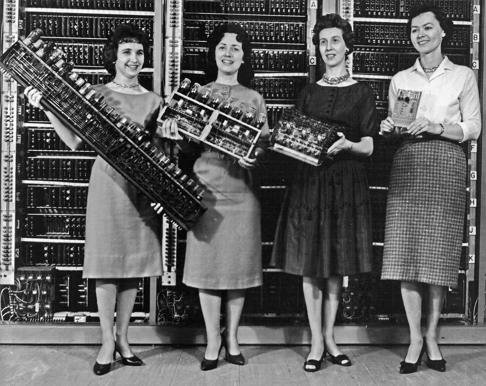</p> <figcaption>Women holding parts of the first four Army computers. Wikimedia Commons, public domain.</figcaption> </figure> </div> </div> Note: The sharpest labor evidence in the whole book. The manuscript itself carries marginal notes flagging this as an intended throughline — this is not a stretch reading, it's the authors' own emphasis. --- <!-- 12a · CH5 TURING MACHINE --> ## Computation Gets a Definition <div class="cols"> <div> - 1936: Turing's paper on "computable numbers" introduces an abstract "universal machine." - CHOC: it "offered the first rigorous definition of computation itself" — a vocabulary for calculation as a general process, not a collection of ad hoc methods. - Decades of augmentation — PCs, networks, the Web — all stand on this one idea, long before any of them were called AI. <p class="chapter-tag">CHOC — "WWII: From Ballistics to Electronic Computing"</p> </div> <div> <figure> <img class="shot" src="images/turing-image-01.jpg" alt="Portrait of Alan Turing"> <figcaption>Alan Turing (1951). Wikimedia Commons, public domain.</figcaption> </figure> </div> </div> Note: This is the conceptual bedrock the rest of the talk quietly stands on, so it earns its own slide rather than a mention in passing. 1936 is nine years before Bush's memex essay and decades before anything resembling AI — the point is that "computation as a general process" is where the whole augmentation story starts, not something AI introduced. --- <!-- 13 · CH6 ACCOUNTABILITY --> ## Who Answers for the Machine's Judgment? <div class="cols"> <div> - UNIVAC correctly forecasts the 1952 election from early returns. - Broadcasters initially distrust the prediction and downplay it on air. - The first public spectacle of, and public suspicion toward, machine judgment. <p class="chapter-tag">CHOC — "Mainframes and Cold War Systems"</p> </div> <div> <figure> <p>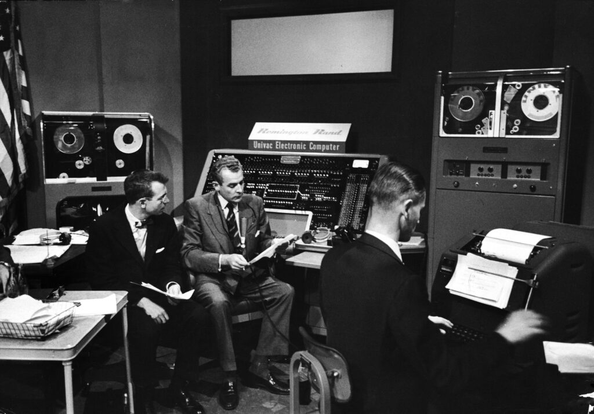</p> <figcaption>Charles Collingwood with UNIVAC, 1952 election broadcast. Al Fenn/LIFE Picture Collection/Shutterstock.</figcaption> </figure> </div> </div> Note: The hype-and-distrust cycle around machine judgment is not new to AI — it's the first thing that happened the first time a machine's output outran human intuition in public. --- <!-- 14 · CH6 LABOR --> ## Same Technology, Reassigned Prestige <div class="cols"> <div> - CHOC: early programming was "regarded as clerical work, suitable for women who had previously served as human 'computers.'" - As complexity grew, it came to be "recognized as a skilled profession." - The underlying labor — transcription, checking, documentation — didn't change. Its status did. <p class="chapter-tag">CHOC — "Mainframes and Cold War Systems"</p> </div> <div> <figure> <p>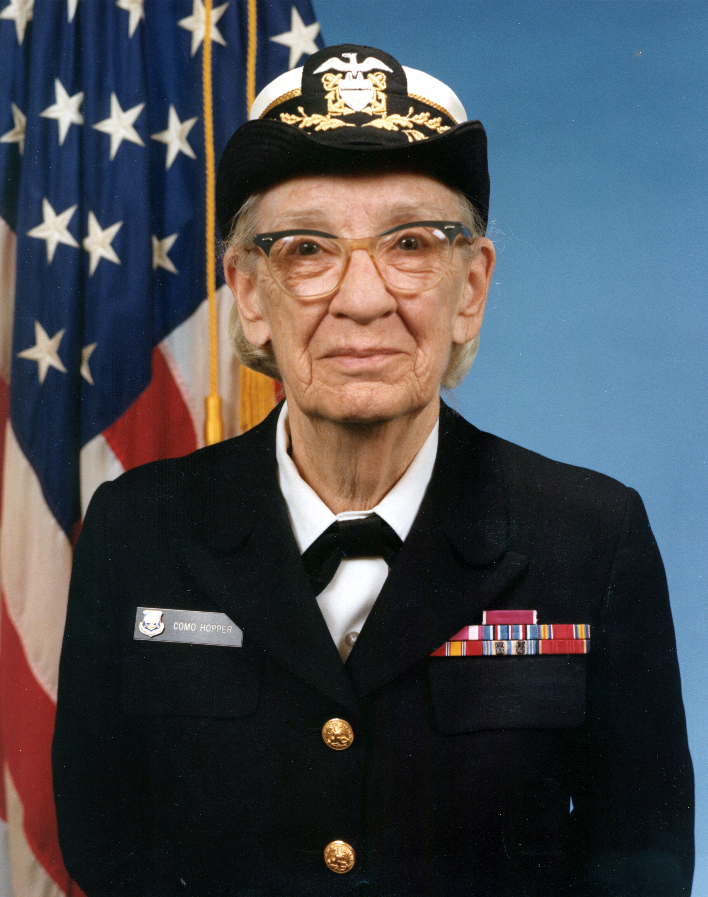</p> <figcaption>Grace Murray Hopper. Wikimedia Commons, public domain.</figcaption> </figure> </div> </div> Note: This is the sharpest single passage in CHOC for the labor lens — technical prestige gets reassigned without acknowledging the deskilled labor underneath. Worth letting this one stand on its own as a 1950s story before drawing any present-day parallel. --- <!-- 15 · CH7 ACCESS+AGENCY --> ## Machines Leave the Data Center <div class="cols"> <div> - CHOC on the PDP-8 (1965): a new category of machine that "democratized access to computing." - Engelbart's 1968 "Mother of All Demos" — the mouse, hypertext, windows — embodied his own philosophy: computers as "partners in human cognition and collaboration." - Reaches classrooms, small businesses, university labs. <p class="chapter-tag">CHOC — "Time-Sharing and Interactive Computing"</p> </div> <div> <figure> <p>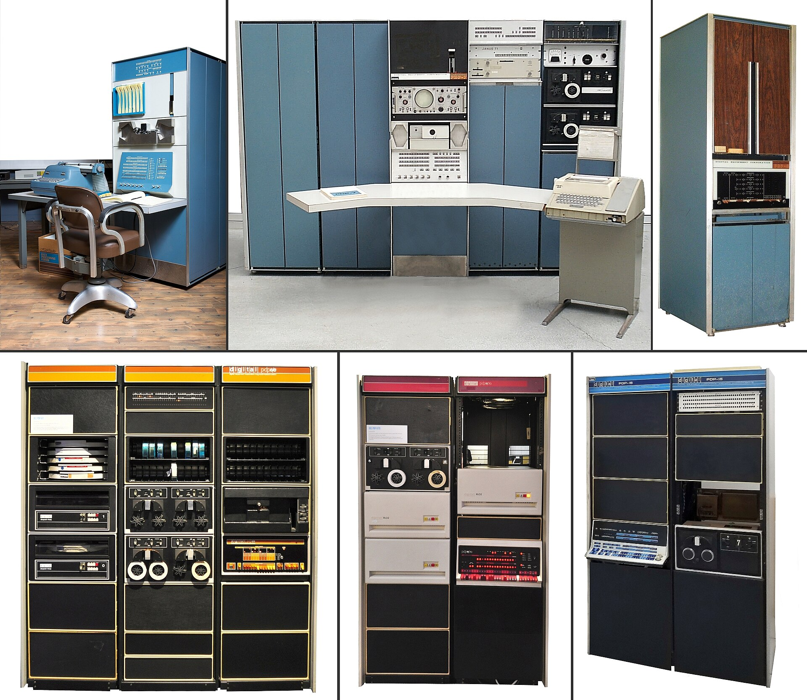</p> <figcaption>DEC PDP-series minicomputers. Various photographers, Wikimedia Commons, CC BY-SA 4.0.</figcaption> </figure> </div> </div> Note: Two lenses on one slide: access (machines leaving institutions) and agency (Engelbart's explicit framing of computing as augmenting, not replacing, human intellect). --- <!-- 16 · CH8 ACCESS/LITERACY --> ## A Market Where None Had Existed <div class="cols"> <div> - January 1975: the Altair 8800 on the cover of *Popular Electronics*. - The Homebrew Computer Club — hobbyists trading ideas freely. - CHOC: BASIC, Pascal, C "lowered barriers to entry, creating a broader base of technical literacy." <p class="chapter-tag">CHOC — "Personal Computing as Promise"</p> </div> <div> <figure> <p>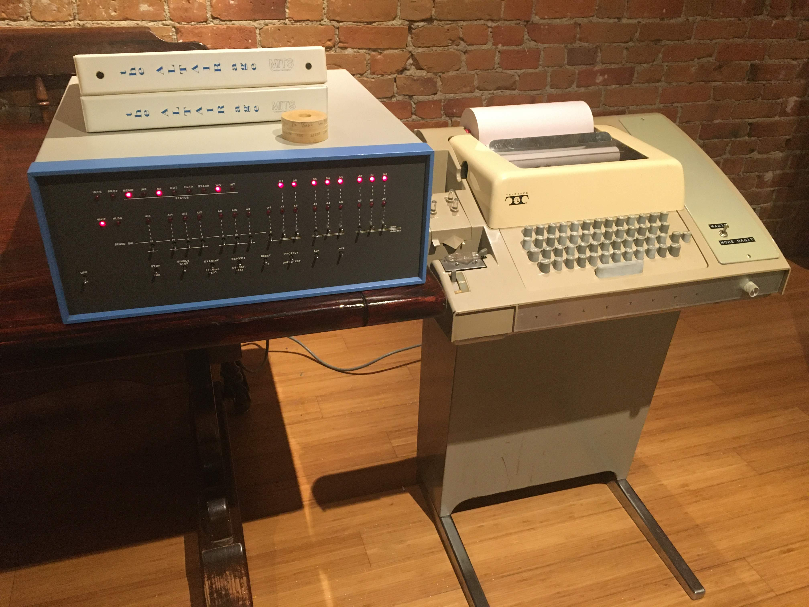</p> <figcaption>Altair 8800 and Model 33 ASR Teletype. Tim Colegrove, Wikimedia Commons, CC BY-SA 4.0.</figcaption> </figure> </div> </div> Note: Literacy as access: the 1970s microcomputer didn't just put a machine in more hands, it lowered the floor for who could plausibly learn to program at all. --- <!-- 17 · CH9 ACCESS --> ## Elite Power vs. Democratized Access <div class="cols"> <div> - CHOC's own contrast: supercomputers "embodied elite concentration of power"; personal computers "democratized access to computing." - The Macintosh (1984) makes the graphical interface — Engelbart's lineage — a consumer product. - Two machines, same decade, opposite answers to "who gets to compute." <p class="chapter-tag">CHOC — "Personal Computers, Interfaces, and Early Networks"</p> </div> <div> <figure> <p>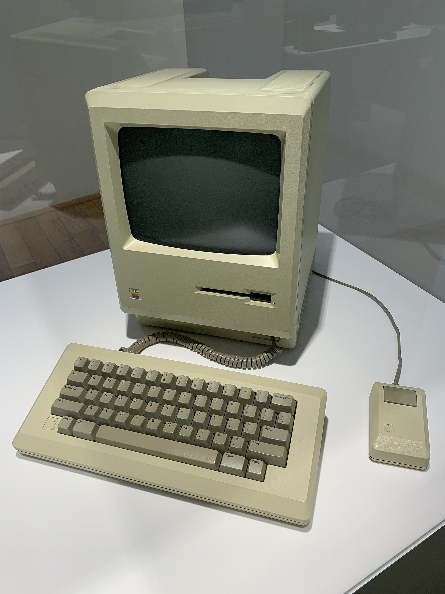</p> <figcaption>Original Apple Macintosh, Apple Museum Prague. Benoît Prieur, Wikimedia Commons, CC0.</figcaption> </figure> </div> </div> Note: This is a ready-made rhetorical pairing for the access lens — elite concentration vs. democratized reach recurs at nearly every threshold in CHOC, and it will recur once more, briefly, near the end. CHOC states this particular instance of it almost word for word. --- <!-- 18 · CH9 AGENCY --> ## Freedom From the Radio Playlist <div class="cols"> <div> - The Walkman (1979): the first portable cassette player, small enough to carry everywhere. - Critics called it antisocial; CHOC says users "embraced it as autonomy." - Elsewhere: "For the first time, media moved with the user, not the other way around." <p class="chapter-tag">CHOC — "Culture: Playback Media and Electronic Spectacle"</p> </div> <div> <figure> <p>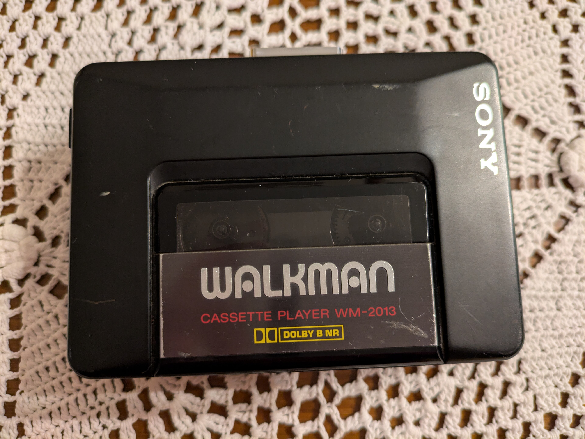</p> <figcaption>Original Sony Walkman TPS-L2. Binarysequence, Wikimedia Commons, CC BY-SA 4.0.</figcaption> </figure> </div> </div> Note: Individual agency over media consumption, decades before "personalized feed" became a phrase — worth pausing on the word CHOC uses: autonomy. --- <!-- 19 · CH10 ACCESS --> ## The Web Becomes Point-and-Click <div class="cols"> <div> - 1993: NCSA Mosaic — the first browser to combine graphics and text in one window. - CHOC's assessment: a turning point "as consequential as the IBM PC in 1981 or Windows 95 in 1995." - Redefined what it meant to use a computer at all. <p class="chapter-tag">CHOC — "Browsers, Services, and the New Economy"</p> </div> <div> <figure> <img class="shot" src="images/mosaic.png" alt="NCSA Mosaic browser screenshot"> <figcaption>NCSA Mosaic browser screenshot. Charles Severance, Wikimedia Commons, CC0.</figcaption> </figure> </div> </div> Note: Access lens: Mosaic's point-and-click interface did to the internet what BASIC did to programming — collapsed the technical floor required to participate. --- <!-- 20 · CH10 ACCOUNTABILITY --> ## The Browser Wars <div class="cols"> <div> - Netscape Navigator (1994) captures the lion's share of Web traffic; 1995 IPO fuels the dot-com boom. - Microsoft bundles Internet Explorer into Windows — 1998 DOJ antitrust suit follows. - Platform accountability disputes did not begin with social media. <p class="chapter-tag">CHOC — "Browsers, Services, and the New Economy"</p> </div> <div> <figure> <p>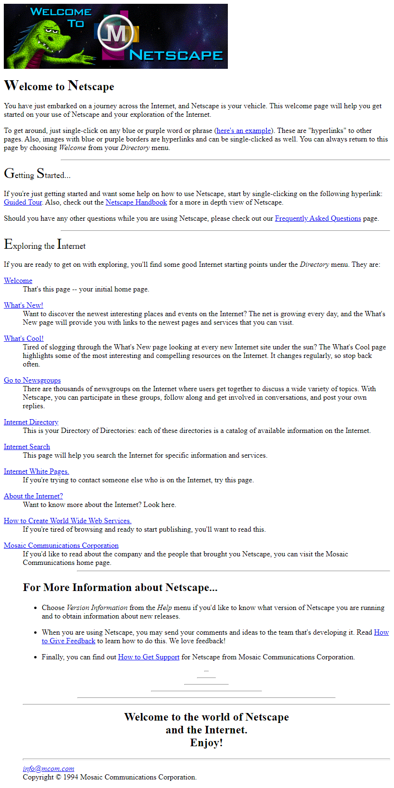</p> <figcaption>Screenshot of the Netscape website in 1994. Web Design Museum, used with permission.</figcaption> </figure> </div> </div> Note: A clean bridge into the accountability-regime material later in CHOC (GDPR/CCPA) — the pattern of dominance-then-regulation is old. --- <!-- 21 · CH11 ACCOUNTABILITY --> ## The Networked Society's Janus Face <div class="cols"> <div> - WikiLeaks/Manning (2010) exposes what governments hide. - The Patriot Act, NSA, and warrantless wiretapping expand what governments see. - CHOC's verdict: "the networked society revealed its Janus face... transparency and secrecy, empowerment and control, were no longer opposites but entangled dynamics of the same infrastructures." <p class="chapter-tag">CHOC — "Web 2.0, Smartphones, and the Cloud"</p> </div> <div> <figure> <p>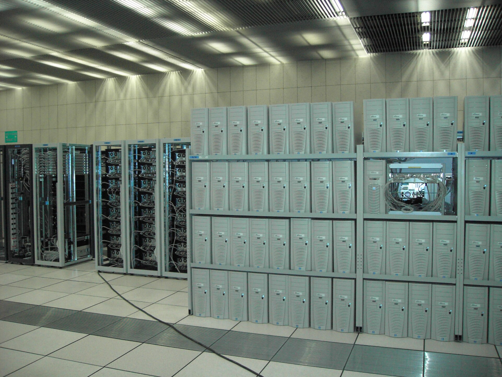</p> <figcaption>NASA computer server farm. Wikimedia Commons, public domain.</figcaption> </figure> </div> </div> Note: Same infrastructure, opposite uses — a durable pattern worth naming on its own terms, from the 2000s web, not borrowed from anywhere later. --- <!-- 22 · CH11 ACCESS --> ## The Convergence Artifact <div class="cols"> <div> - The iPhone (2007): camera, browser, phone, and platform in one object. - Castells' "network society" stops being theory and becomes lived condition. - Smartphones become the primary access point to computing worldwide. <p class="chapter-tag">CHOC — "Web 2.0, Smartphones, and the Cloud"</p> </div> <div> <figure> <figcaption>iPhone (2007). Avicente05, Wikimedia Commons, CC BY-SA 4.0.</figcaption> </figure> </div> </div> Note: This is the stepping-stone right before CHOC's own concluding argument — the always-on decade becomes the singularity decade. --- <!-- 22a · MEMEX/WORLD BRAIN THROUGHLINE --> ## A Library That Was Always Coming - 1945: Vannevar Bush's essay "As We May Think" imagines the memex — a device for augmenting human memory and association. No AI involved; the idea is 80 years old. - CHOC returns to this vision three separate times — at the CD-ROM, the Web, and Wikipedia — each a partial realization of the same 1945 idea. - CHOC's own verdict: singularity "no longer described a hypothetical future in which artificial intelligence exceeded human cognition, but a present reality in which human culture and digital systems had become inseparable." <p class="chapter-tag">CHOC — "The Memex/World Brain Throughline"</p> Note: This is the single clearest piece of evidence in the whole book for the point worth making explicit here: augmentation of human capability did not wait for AI, and CHOC does not think it did either. Bush's memex, Engelbart's demo, the PC, the Web, and Wikipedia are five separate, successful attempts at the same 1945 goal — extending human memory and reach — with no artificial intelligence required for any of them. The last quote is CHOC pushing back on exactly the AI-centered framing this talk is careful to avoid: it says outright that the cultural singularity is not about AI surpassing human cognition. --- <!-- 23 · CH12 AUTOMATION --> ## The Edge of Automation, Before Anyone Called It AI <div class="cols"> <div> - CHOC's account: "datafication" of ordinary behavior — clicks, GPS traces, likes — becomes a monetized reservoir; critics (elsewhere) called it "surveillance capitalism." - 2012: deep learning classifies images with unprecedented accuracy. - By mid-decade, CHOC argues, algorithms were "silently shaping cultural consumption... They did not merely respond to human choices; they guided them." <p class="chapter-tag">CHOC — "Data, AI, and the Edge of Automation"</p> </div> <div> <figure> <p>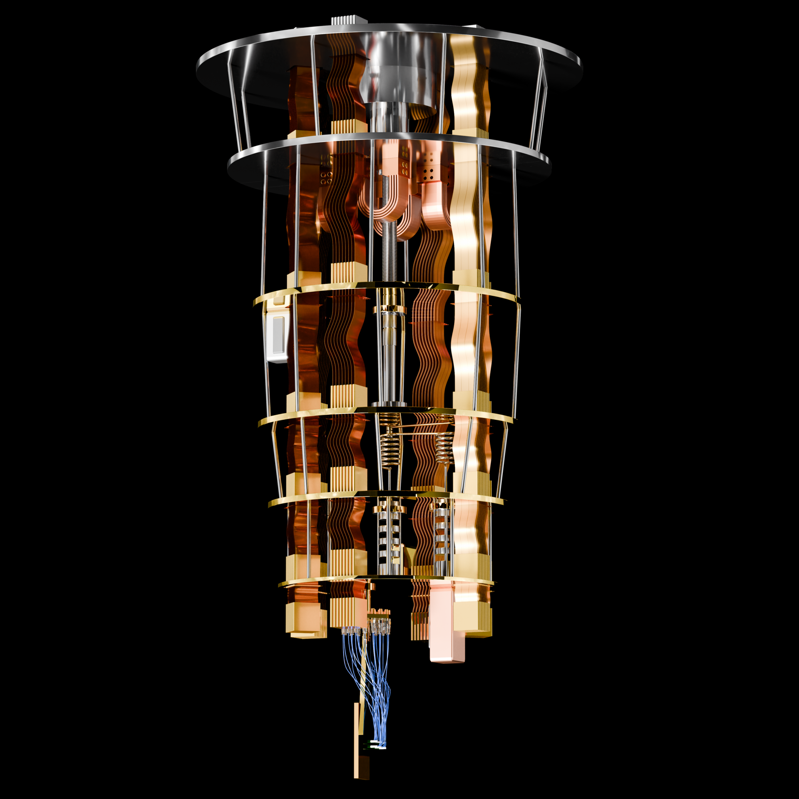</p> <figcaption>Quantum computer. Wikimedia Commons, public domain.</figcaption> </figure> </div> </div> Note: CHOC narrates the technical run-up to today's generative AI — 2012 deep learning, transformers, BERT, GPT-2 — as submerged infrastructure nobody recognized as culturally transformative at the time. We already lived this once. --- <!-- 24 · CH12 ACCESS+LABOR --> ## Global in Reach, Fragmented in Practice <div class="cols"> <div> - Four models of the 2010s network: U.S. ad-driven, EU regulatory, Chinese platform-state, Global South mobile-leapfrogging (M-Pesa, Jio). - CHOC's paradox: "communications in the 2010s were global in reach but fragmented in practice." - On the creator economy, CHOC: influencer labor was "both artistic performance and data-driven optimization." <p class="chapter-tag">CHOC — "Global Divergence" · "Culture: Feed Culture and the Creator Economy"</p> </div> <div> <figure> <p>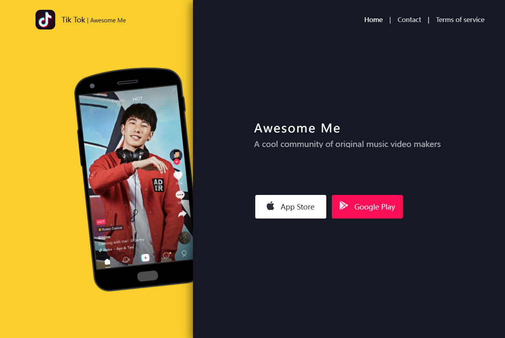</p> <figcaption>Screenshot of TikTok in 2017. Web Design Museum, used with permission.</figcaption> </figure> </div> </div> Note: This is a ready-made framework for talking about global digital access and equity generally, rather than a US-only frame. The creator-economy line stands on its own as a 2010s labor story; leave any present-day extension implicit rather than naming it. --- <!-- 25 · CH12 ENVIRONMENTAL --> ## The Modern Gutta-Percha - CHOC titles this section "The Cloud as Utility and Platform" — infrastructure at a scale the 2010s took for granted. - Same pattern as the transatlantic-cables story: convergence has a material substrate, usually invisible. - What was once millions of kilograms of gutta-percha is now data-center power and water. <p class="chapter-tag">CHOC — "The Cloud as Utility and Platform"</p> Note: Deliberate rhyme with the earlier gutta-percha slide — same argument, modern substrate. This is the weakest book-supported lens; carry it with your own energy-efficient-computing research rather than over-claiming what CHOC states outright. --- <!-- 26 · BRIDGE --> ## One More Entry in a Long List - From CHOC: the Turing machine, the memex, and the PC already extended human capability, long before anyone spoke of AI. - From my own course notes, a parallel list: the calculator, high-level languages and compilers, the Web, Wikipedia, and Stack Overflow each triggered the same "this makes programming knowledge unnecessary" anxiety — and each time, "deep knowledge did not become obsolete; it became the thing that distinguished engineers who directed the tools well from those who were directed by them." Generative AI is the latest entry, not a break from the pattern. - Same notes: "AI output is code, and code requires a reader." Accountability stays human, as it did for all the others. <p class="note-inline">Two sources on this slide, kept deliberately distinct: CHOC's own augmentation throughline (bullet 1), and a course-reading argument of mine (bullets 2–3). CHOC ends in 2020, before generative AI.</p> <p class="chapter-tag">Course notes cited: George K. Thiruvathukal, "A Pattern of Disruption? Or Yet Another Disruption?," <em>Introduction to Computer Science in Python: Principles and Practice</em> — introcs-python.cs.luc.edu/context/motivation.html</p> Note: Explicit hand-off, clearly marked as your own voice rather than book evidence, and now explicitly split into its two actual sources rather than blended into one undifferentiated list. The point of bullet 1 is to make AI look small before bullet 2 even starts — one item among many, not the culmination of the talk. This is where your own AI/computer-vision/energy-efficient-computing/agentic-coding research enters directly, but it should land as an epilogue, not a climax. --- <!-- 27 · PART 3 DIVIDER --> <!-- .slide: class="center" --> ## Directing the Disruption <span class="lead">CHOC's territory ends in 2020. Computing has already disrupted culture, repeatedly, for twenty thousand years.</span> Generative and agentic AI are the latest instance, not a category apart — that claim is this talk's, not CHOC's. Note: Transition into the close. This is the pivot point where I have to be careful about scope: CHOC argues, with evidence, that computing has repeatedly disrupted culture across millennia. It does not discuss generative or agentic AI at all — that extension is mine, built on CHOC's pattern, not stated in it. Say so plainly here before resolving the Faustian-Turing motif, so the close doesn't overclaim on CHOC's behalf. --- <!-- 28 · RESOLVE FAUSTIAN-TURING --> <!-- .slide: class="center" --> ## The Hybrid We Already Are <blockquote>"The resulting Faustian-Turing Type is both monstrous and marvelous, and we are it."</blockquote> <p class="quote-src">— <em>History of Computing and Its Cultures</em>, resolving the figure introduced earlier in this talk</p> <span class="lead">Not a doom narrative. A responsibility narrative.</span> <p class="chapter-tag">CHOC — "Conclusion: The Cultural-Computing Singularity"</p> Note: Resolve the motif planted at slide 4. The point of naming ourselves as already-hybrid is that responsibility, not fear, is the correct register for talking about what comes next. --- <!-- 29 · 2020 HAND-OFF --> ## CHOC Ends Where This Talk Begins <div class="cols"> <div> <figure> <figcaption>Ishango Bone. JhowieNitnek, Wikimedia Commons, CC BY-SA 4.0.</figcaption> </figure> </div> <div> <figure> <figcaption>AlphaGo / reinforcement learning. Wikimedia Commons, public domain.</figcaption> </figure> </div> </div> - CHOC's history runs from the Ishango Bone to 2020, and stops there deliberately. - Generative and agentic AI are the next, uncovered chapter — not a rupture from what came before. <p class="chapter-tag">CHOC — "Conclusion: The Cultural-Computing Singularity"</p> Note: Echo slide 3's pairing on purpose — same two images, now doing hand-off work instead of scene-setting work. --- <!-- 30 · PRACTICAL-HUMANIST CHARGE --> ## What CHOC Asks of Its Readers <blockquote>"The point is not that everyone must become a computer scientist... To ride the currents of change rather than be swamped by them requires a working understanding of how these systems shape production, distribution, discovery, and memory."</blockquote> <p class="quote-src">— <em>History of Computing and Its Cultures</em>, closing charge to readers</p> <p class="chapter-tag">CHOC — "Conclusion: The Cultural-Computing Singularity"</p> Note: This is CHOC's own closing charge to its readers — reuse it directly as the talk's charge to the audience. --- <!-- 31 · CLOSING --> <!-- .slide: class="center" --> ## Computing Has Always Disrupted Culture <span class="lead">That's CHOC's evidence — twenty thousand years, no exception.</span> Generative and agentic AI are not a rupture from that pattern; they are its newest instance. The question is whether we can direct the disruption toward human flourishing — while retaining the knowledge, judgment, and responsibility to remain meaningful agents in an increasingly computational culture. <p class="authors" style="margin-top:1.2em">George K. Thiruvathukal · David B. Dennis</p> Note: Close on the abstract's own final line, but keep the scope honest out loud: CHOC's claim is about computing across history, not about AI specifically — CHOC never discusses generative or agentic AI. The move from "computing disrupts culture" to "so does AI" is the talk's own argument, made explicit here rather than left implied. Thank the audience; open for questions.